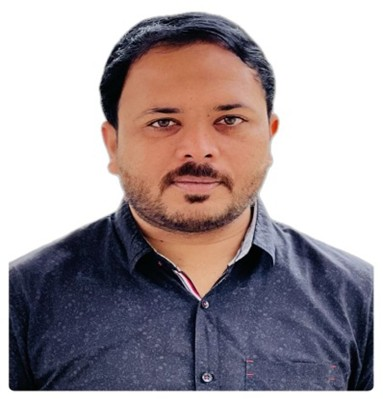

Muhammad Khubaib

Summary:
Seeking a position in the Accounts/I.T Department as a Web Developer where I can utilize my professional
expertise for efficient functioning of Organization and management of goal oriented assignments.
Summary: Professional Skills:
- Handling of General Ledgers.
- Preparation & Updating of Accounts Receivable & Payable Report.
- Preparation & Analysis of Financial Statement.
- Internal & External Audit Management.
- Routine Office Management.
- Manage Computer Hardware Issues and Maintenance.
- Computer Network Issues and Maintenance.
- Ability to Work Under Stress.
- Handling HR Issues of Organization
Professional Experience:
From: January 2016 – Present
Job Title: Manager Accounts / Manager IT (Networking)
Organization: Bismilllah Housing Scheme (Project of Bismillah Developers)
Job Responsibilities:
- Prepare, examine, analyze accounting records and other financial reports to in conformance to reporting and
procedural standards.
- Prepare, examine, analyze accounting records and other financial reports to in conformance to reporting and
procedural standards.
- Supervising bookkeeping; vouchers preparation & posting of entries made under the AIMS (Accounting
Information and Management System - GL, AP, AR, Fixed Assets, Payroll) regarding the purchases, purchase
return, sales, and sales return, payroll and bank miscellaneous entries.
- Effective financial management of company funds.
- Prepare receivable & payable reports (ledger vs. pending) on daily basis.
- Dealing with banks (deposit, withdrawal and transfer). Reconcile multiple bank accounts.
- Financial reporting, financial closings of accounts and preparation of periodical Financial Statements.
- Dealing with matters related to Sales Tax, Income Tax and liaison with Tax Consultants.
- Keep track / record of all expenses incurred in different branches and prepare summary reports.
- Perform special accounts related task and submit summarized reports to CEO.
From: January 2016 – Present
Job Title: Manager IT (Networking)
Organization: Bismilllah Housing Scheme (Project of Bismillah Developers)
- Install well-functioning computer networks, connections and cabling.
- Identify troubleshooting and system failures and ensure efficiency of network.
- Inspect LAN infrastructure and address minor or major problems.
- Test and configure software, maintain and repair hardware and peripheral devices.
- Evaluate network performance and take measures for improvement/up-gradation.
- Regular data backups to protect the organization’s information/data.
- Provide technical direction to co-workers on computer and network usage.
From: January 2016 – Present
Job Title: HR Manager
Organization: Bismilllah Housing Scheme (Project of Bismillah Developers)
- Maintaining record and career profile of employees.
- Providing necessary support for payroll requirements.
- Managing induction and required training of employees for professional grooming.
- Ensure implementation of organizational Bay Laws/SOPs.
Education:
- BSCS (2022)
- DAE I.T (Information Technology) (2015)
- Matric (2011)
Others